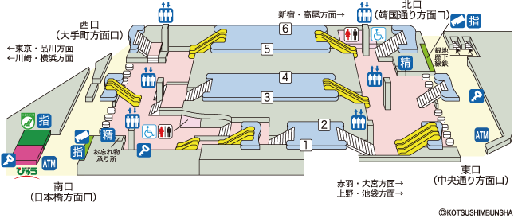
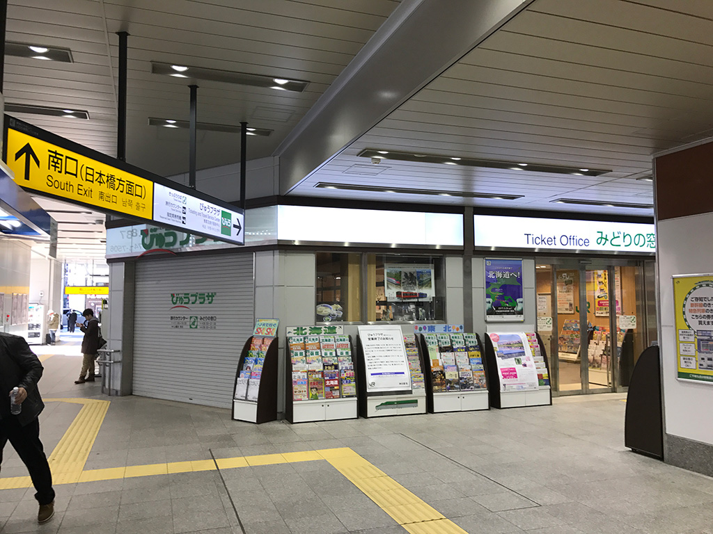
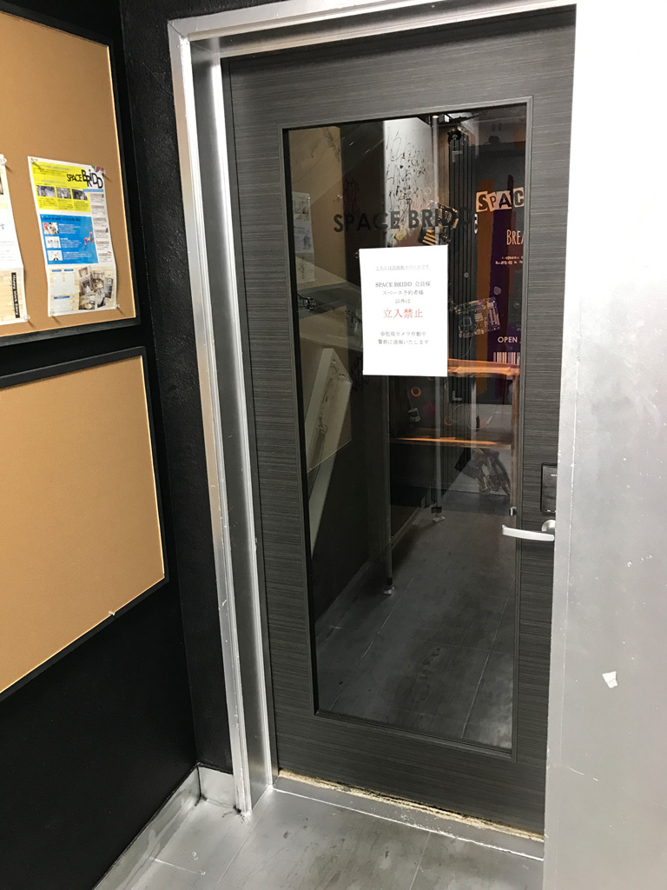
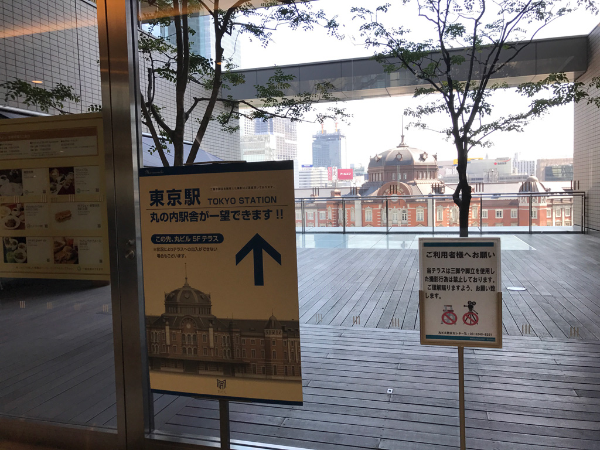

３月２５日（土）のミルモオフについて、以下にまとめます。
■参加者
夏田みかんさん
ムモデレラさん（お母さま同伴）
葉月さん
アマデウスさん
はやぶささん
リオンさん
柴さん
フクフェイさん
moonさん
浅見さん
MC119さん
こやまる
■持ってくるもの
・ぬいぐるみ（オフ会中に皆さんのぬいぐるみを用いた写真撮影大会を行います。推奨サイズは全長２０センチくらい）
・お絵描きグッズ（スケッチブック、筆記具、コピックなど）
・会費７００円
・その他、ネタ的なものも大歓迎です^^
・クイズ大会の景品提供も大大歓迎です^^
・お菓子の提供も大大大歓迎です^^
■集合時間と集合場所
集合時間は１３時です。
待ち合わせ場所は、JR神田駅南口のみどりの窓口前です。
（みどりの窓口の出入り口を塞がないように集まってください）
当日は目印として、こやまるはムルモのぬいぐるみを手に持って立っています（予定）。
到着されたらこやまるにお名前(HN)をおっしゃってください。
（名前を覚えるのがすごく苦手なこやまるですが、がんばって覚えます！）
集合時間に遅れそうな場合は、Twitterのグループチャット(DM)に遅れそうな旨を発言してください。
事前にお昼を食べてきてくださいね。
（食事やお菓子を持参して、オフ会中に食べるのもありです）

みどりの窓口前はこんな感じです。

■オフ会の流れ
13:00 神田駅南口に集合、会議室へ徒歩へ移動（約10分）
13:30～ 会議室でオフ会
軽くあいさつ（HNと推しキャラ、最近ハマっていること等）
雑談やお絵描き
ミルモのクイズ大会（景品あり？）
ぬいぐるみ記念撮影(1)
16:00頃（遅くても16:30まで） 東京駅方面へ徒歩で移動（約20分）
16:30頃 丸ビル５階のテラスで、東京駅をバックにぬいぐるみ記念撮影(2)
17:00頃 解散
■備考
会議室の入り口の写真

会議室は飲食自由です。
隣のビルにセブンイレブンがあります。
会議室備え付けのプロジェクターを借りて、クイズ大会を開催します。
緊張をほぐすため、オフ会中はミルモ曲を流す予定。
ゴミは持ち帰りでお願いします。
退出時は、会議室のレイアウトを元通りにします。
丸ビル５階のテラスの写真

平日の午前中に撮影したので全然人はいませんが、土曜日の夕方だと人が多くて写真撮影は難しい可能性もあります(^◇^;)
(2017/3/19)